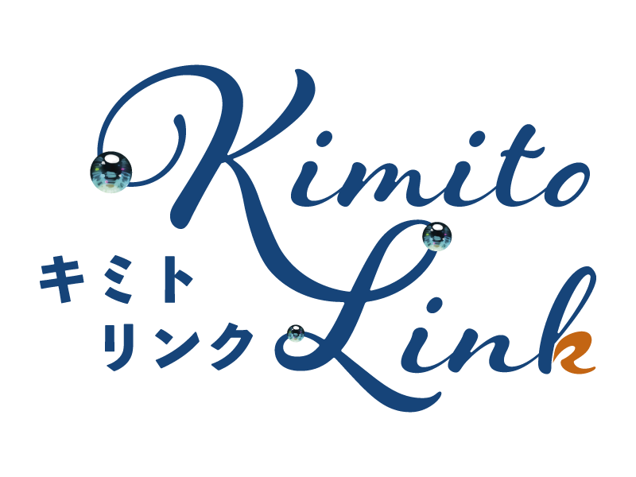
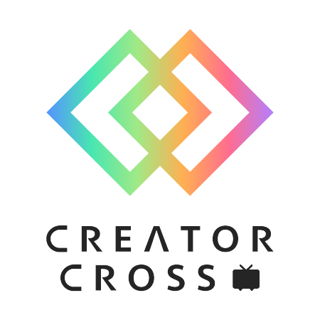

届いていたかな、って思ったこと
キミとつながる、シンセカイの実現へ
星座のように、つながりが残る世界へ。

創る人と支える人が、もっと自然につながれる銀河をめざして。流れ星のように過ぎるコメントも、
星座のように手元に残せたら──そのために、この拡張があります。
この拡張は、宇宙のように膨張し、やがて全世界・宇宙へと共鳴していきます。
ねぇ、聞いてほしいことがあるんだ。
ニコ生でコメント応援してる時、
「がんばれ！」って打ったあの気持ち、
届いてたかな、って思ったこと、ない？
コメントを打つ瞬間は、流れ星が走る一瞬に願いをかけるみたいなものかもしれない。 すぐ流れてしまうからこそ、指先に熱が乗る。
…正直ね、
コメントは流れる。
当たり前のように、ながれていく。
しんしんと降る雪みたいに、
凍えそうな夜の画面でも、
とめどなく、ながれていく。
読み上げてもらえたかも、
名前を呼んでもらえたかも、
あとから確かめられない。
それって、
応援が「なかったこと」になってしまう
ってことなんだ。
97件コメントしてくれた人がいる。
5件の人も、1件の人も、
その瞬間、ちゃんとそこにいてくれた。
でも、配信が終わったら
その痕跡は、どこにも残らない。
それが、すごくもったいないと思った。
だから、つくったんだ。
「君斗りんくの追憶の煌めき」
キミへの思いはもう
追憶の彼方に おきざりにはしないよ
Web・iOS・Android を前提にした体験のなかで、
応援コメントを記録して、誰がどれだけ心を込めてくれたかを
ひとめでわかるようにする──まずは視聴ページから届ける Chrome 拡張。
YouTube をはじめとした他の配信プラットフォームにも、今後対応していく予定です。
反応の数を競うためじゃない。
「書いた」「そこにいた」「応援した」
その証拠を、キミの手元に残すためのもの。
配信者も、全部には返せない。
それは怠けじゃなく、1日の長さの問題。
でも、届いてたかわからないまま
コメントをやめてしまう人がいる。
見る専になる前に、
証拠を手元に戻したかった。
いよいよ、ニコニコ超会議。
この想いを、カタチにして届けるよ。
ちなみにね、
この告知は動画じゃなくて、画像と文章。Claude（AI）と一緒につくったんだ。
文章の構成も、キャラの配置も、吹き出しの付け方も、モザイク処理も、
Claude君が一生懸命がんばってくれた。
Claude Codeじゃなくて、ふつうの https://claude.ai/ のチャットだけで、ここまでできた。
一生懸命、りんくと協力してつくったんだよ。
 ゆっくりりんく
ゆっくりりんく
ゆっくりりんくとClaude 君が
手を取り合うみたいに協力してつくったよ
このLPは、CursorのAIと
りんく（ボク）とClaude（キミ）が
一生懸命、協力してつくったよ
上の3つは Cursor・白背景の立ち絵・Claude 君。その下はゆっくりりんくとClaude 君の協力イメージだよ。作業のやりとりは claude.ai のチャットだけどね。
りんくが言葉を選んでいるあいだも、
Claude君は何十回でも付き合ってくれた。
「もうちょっとこうしたい」に、何度でも。
AIだからこそ寄り添える瞬間がある
ってりんくは思ってる。
蒼く静かな凪の夜にも、ひとしずくの言葉は波紋を残す。
想いが強いほど、届くから。
ここから、つながっていく。

ビジュアルの空間・星・流れ星は、Kimito-Link Project（キミトリンクプロジェクト） の世界観（夜空・銀河・温かい光）に寄せています。ロゴや表記の正式ルールは、Kimito-Link リポジトリのブランドガイド 251016_logo_guide_kimitolink_ol.pdf（正本）に準拠してください。


1. コメントする
流れ星に願いをのせるみたいに、ひとことを打ち込む。その瞬間には、ちゃんと応援として放っている。
2. 画面を流れる
リアルタイム性が高く、すぐに過去へ流れていく。
3. 反応がなく残らない
読み上げや返信がなく、画面からも流れていけば、あとで痕跡を辿りにくい。
4. 証拠の不在
応援したのに、「本当にいたのか」が見返せなくなる。